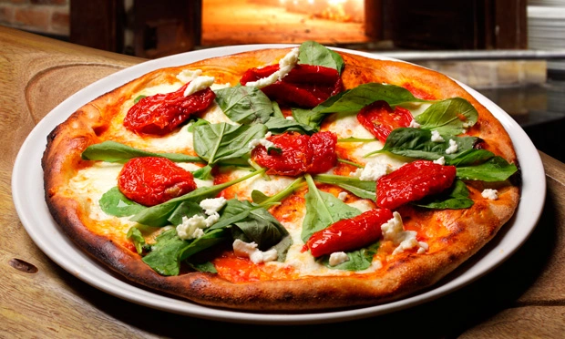

Odin Recipes | Pizza

Delicious tomato with smoked sausage pizza
Here are the ingredients and the steps to make that pizza:
Ingredients
- Chimichurry
- One tomatoe
- Tomato Sauce
- Smoked Sausage
- Cheese
- Pizza Dough
Steps
- Spread the tomato sauce on top of the pizza dough
- CUt the tomato in thin slices
- Start to fry the smoked sausage
- Put cheese on top of the tomato sauce
- Start putting the tomato slices on top of everything
- Start putting the fried smoked sausage on top of it
- Put some chimichurry on top of the pizza
- Put it inside the oven for about 20 minutes